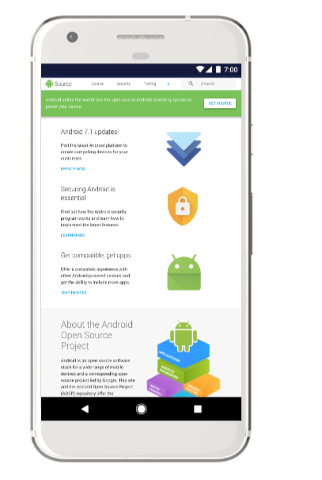

This page describes significant revisions to source.android.com. For a complete list of changes to this site refer to the Android Open Source Project (AOSP) docs/source.android.com log.
The former ART section was renamed Runtime to more clearly convey the subject of those contents.
The linked tabs and sections now have overviews:
Finally, page titles have been simplified and standardized throughout the site.
Welcome to the revised Android Open Source Project (AOSP) website. As our site has grown, we’ve reorganized the platform documentation navigation to better accommodate new and updated information.
See the subsections below for a guide to major changes. See the Release Notes for feature summaries, updates, and additions. Send us your feedback via bugs filed at g.co/androidsourceissue or by clicking the Site Feedback link in the footer of every page on the site.
The most sweeping change is the introduction of a second horizontal menu of tabs within the site’s navigation to better expose deeper pages. Now, instead of left navigation menus containing dozens of entries, each subtab contains a small list of sections and pages directly relevant to the associated topic identified in the subtab.
Note that we haven't updated directory paths and URLs for existing documentation to avoid breaking bookmarks and external links... yet. In time, we'll make these changes and institute redirects accordingly. So revisit the site for new locations and update your bookmarks as you find changes.
The main Set up tab is renamed slightly from Setup to match the verbs used for subsequent primary tabs. Download and Build contents are split into distinct subtabs to ease access to the pages they contain. The Develop subsection is now the Create subtab to avoid confusion with the new top-level Develop tab of the same name.
The information from the Compatibility > Contact Us page is moved to the main Set up > Contact (Community) list.
The information from the top-level Compatibility tab is now under Design. See the Compatibility subtab for an overview of that program and links to the new Android Compatibility Definition Document (CDD).
In a related change, instructions for the Android Compatibility Test Suite (CTS) and general debugging information are moved to the new Tests subtab. Display and Settings menu guidelines now have dedicated subtabs.
The Porting tab is renamed Develop to better convey the instructions on this tab. Largely focused upon implementing individual interfaces, this documentation helps you write the drivers necessary to connect your device to the Android operating system.
As a result, the Architecture section describing the overarching HIDL format is moved to the Design tab for consideration during the planning phase, earlier in the development cycle. The Bootloader contents are now under Design > Architecture, while the Interaction subtab contains Input, Sensors, and related information.
The Connectivity section is reorganized to include Bluetooth and NFC, Calling and Messaging, Carrier, and Wi-Fi subsections. In addition, the Wi-Fi section includes the following new articles:
The Tuning tab is renamed Configure to encapsulate more than customization and optimization steps. The content from the Device Administration subsection is now found under Enterprise. The ART and Dalvik contents are under ART, and Over-the-air (OTA) update information is under Updates.
Android 8.1 is released! See the entries below for the major platform features introduced in this release.
AAudio is an audio API with enhancements to reduce latency when used in conjunction with a HAL and driver that support MMAP. See AAudio and MMAP for documentation describing the hardware abstraction layer (HAL) and driver changes needed to support AAudio's MMAP feature in Android.
In Android 8.1, the WITH_DEXPREOPT_BOOT_IMG_ONLY makefile option is removed
from the Android runtime (ART) and replaced with the
WITH_DEXPREOPT_BOOT_IMG_AND_SYSTEM_SERVER_ONLY option that
pre-optimizes the system server JAR files, as well as the boot classpath. See
Configuring ART for
the deprecation notice.
Android 8.1 introduces two new metrics associated with biometric unlocks that are intended to help device manufacturers evaluate their security more accurately: imposter accept rate (IAR) and spoof accept rate (SAR). See Measuring Biometric Unlock Security for example attacks and test methodology.
Starting in Android 8.1, you can improve device boot times by disabling the power saving
setting for components like UFS and CPU governor. See Optimizing Boot
Times for the init.*.rc settings.
Android 8.1 adds color management support for a consistent experience across display technologies. Apps running on Android 8.1 can access the full capabilities of a wide color gamut (WCG) display to get the most out of a display device. See Color Management for instructions on implementing, customizing, and testing this feature.
In Android 8.1 and higher, only the ro.zygote.disable_gl_preload
property applies to OpenGLRenderer configuration. All other
properties are removed. See OpenGLRenderer Configuration for the
notice and previously supported properties.
Through the Device Policy Manager, Android 8.1 supports demonstrating device functionality in retail stores via a demo-type user role. See Retail Demo Mode for implementation instructions.
Android 8.1 introduces the TextClassfier API that uses machine learning techniques to help developers classify text. See Implementing Text Classification for instructions.
Android 8.1 provides a mechanism for device manufacturers (OEMs) to push updated time zone rule data to devices without requiring a system update. This mechanism enables users to receive timely updates and OEMs to test time zone updates independently of system image updates. See Time Zone Rules for instructions on applying these updates.
The Wi-Fi Aware feature in Android 8.1 enables supporting devices to connect to one another directly over Wi-Fi without internet or cellular network access. This feature allows easy sharing of high-throughput data among trusted devices and apps that are otherwise off network. See Wi-Fi Aware for examples, source files, and links to additional documentation.
The Source section is renamed to Setup. Redirects are in place to ensure that the old URLs still work.
This site is released in China at source.android.google.cn. All non-reference materials are translated into Simplified Chinese for ease of use.
Android 8.0 is released! This section describes the major new features in the Android 8.0 platform.
Android 8.0 includes support for Treble, a major re-architect of the Android OS framework designed to make it easier, faster, and less costly for manufacturers to update devices to a new version of Android. Documentation includes details on the HAL interface definition language (HIDL), a new ConfigStore HAL, device tree (DT) overlays, the Vendor Native Development Kit (VNDK), vendor interface (VINTF) objects, modular kernel requirements, and the Vendor Test Suite (VTS) and infrastructure.
FunctionFS (FFS) is a USB gadget function that is designed and controlled through user space. Its support allows all of the function- and protocol-specific code to live in user space, while all of the USB transport code lives in the kernel. Using FFS moves media transfer protocol (MTP) implementation into user space.
On the frameworks side, most of the major changes are in the MtpServer class. The
USB driver interface is refactored into two different classes, one that
uses the old kernel driver and one that uses FFS. MtpServer can then
use that driver interface without the implementation details.
The FFS driver writes the USB descriptors to a file when
the server starts up; it then writes data to endpoint files similar to the
kernel driver use.
The Android 8.0 release includes kernel enhancements that help developers create better apps by improving their debugging experience. For more information, see Kernel Enhancements to LLDB/C++ Debugging.
In Android 8.0, kernel hardening features and tools to find bugs in kernel drivers are upstreamed. For more information, see Kernel Hardening.
SquashFS is a compressed, read-only file system for Linux, suitable for use on the system partition. The optimizations in this document help improve the performance of SquashFS. For more information, see Optimizing SquashFS at the Kernel Level.
AOSP offers a new fuzzing testing suite for testing the Android runtime (ART) infrastructure. The new toolset, JFuzz, and an improved DexFuzz are directly available in AOSP with accompanying documentation.
Nothing is required to implement or use the new tools. You may make changes to the tools if required, just like you can make changes to the runtime/compiler.
VDEX files improve the performance and user experience of software updates.
VDEX files store pre-validated DEX files with verifier dependencies so that
ART doesn't need to extract and verify the DEX files during system updates.
This feature is enabled by
default. To disable the feature, set the ART_ENABLE_VDEX
environment variable to false.
The Android runtime (ART) is improved significantly in the Android 8.0 release. This document summarizes enhancements that device manufacturers can expect in ART. For more information, see Android 8.0 ART Improvements.
This update answers common questions that device manufacturers have about Android A/B (seamless) system updates. For more information, see the frequently asked questions for A/B updates.
Android 8.0 provides Bluetooth connection management in in-vehicle infotainment systems for a more seamless Bluetooth user experience. For more information, see Bluetooth connection management.
Bluetooth multi-device connectivity lets users connect multiple devices to telephony profiles in an Android Automotive IVI Bluetooth. For more information, see Bluetooth multi-device connectivity.
Describes the design of an exterior view system (EVS) stack and provides the HAL specification for supporting the acquisition and presentation of vehicle camera data. For more information, see Vehicle Camera HAL.
See the updated Bluetooth overview.
For details on how to verify and debug the native Bluetooth stack, see Verifying and Debugging.
Bluetooth provides a variety of features that enable core services between devices, such as audio streaming, phone calls, and messaging. For more information, see Bluetooth Services.
Bluetooth 5 supports different modes of data advertisements for Bluetooth Low Energy, including higher bandwidth or increased range. For more information, see Bluetooth Low Energy Advertising.
The Android 8.0 release includes support for Bluetooth high-definition audio codecs. For more information, see Advanced audio codecs.
The Android 8.0 release contains these key enhancements to the camera service:
shared surfaces, enable multiple surfaces sharing the same OutputConfiguration
System API for custom camera modes, and onCaptureQueueEmpty. For more
information, see Camera Version
Support.
Capabilities allow Linux processes to drop most root-like privileges, while
retaining the subset of privileges they require to perform their function.
Ambient capabilities allows system services to configure capabilities in their
.rc files, bringing all of their configuration into a single file.
For more information, see
Ambient Capabilities.
Starting in Android 8.0, all privileged apps must be explicitly whitelisted in
system configuration XML files in the /etc/permissions directory.
If they aren't, then the device boots, but the device implementation doesn't
pass CTS. For more information, see
Privileged Permission
Whitelisting.
The Android 8.0 release moves the handling of USB commands out of init scripts and into a native USB daemon for better configuration and code reliability. For more information, see Implementing USB HAL.
Android devices with no data balance allow network traffic through, requiring carriers and telcos to implement mitigation protocols. This feature implements a generic solution that allows carriers and telcos to indicate when a device has run out of balance. For more information, see Customizing Device Behavior for Out-of-Balance Users.
Sanitizers are compiler-based instrumentation components to use during development and testing to identify bugs and make Android better. Android's current set of sanitizers can discover and diagnose memory misuse bugs and potentially dangerous undefined behavior. For more information, see LLVM Sanitizers.
Android 8.0 includes the Rescue Party feature, which sends recovery help when it identifies core system components stuck in crash loops. Rescue Party escalates through a series of actions to recover the device. For more information, see Rescue Party.
Android 8.0 adds support for storaged, an Android native daemon
that collects and publishes storage metrics on Android devices. For more
information, see Implementing
storaged.
Android 8.0 introduced Air Traffic Control (ATC) for floating windows to simplify and unify how apps display on top of other apps. Everything necessary to use the feature is included in the AOSP.
ATC allows developers to create a new (managed) floating layer/window type for apps to use to display windows on-top of other apps. The feature displays ongoing notifications for all apps using a floating layer that lets the user manage the alert window.
The Android Compatibility Test Suite (CTS) confirms:
TYPE_PHONE,
TYPE_PRIORITY_PHONE, TYPE_SYSTEM_ALERT,
TYPE_SYSTEM_OVERLAY, and TYPE_SYSTEM_ERROR.
TYPE_APPLICATION_OVERLAY window type.
TYPE_APPLICATION_OVERLAY windows.
Virtual displays are available to everyone, and they don't require any special hardware. Any app can create an instance of virtual display; in the Android 8.0 release, activities can be launched on that virtual display if the associated feature is enabled.
To support multi-display features, do one of the following:
IComposerCallback.hal and
IComposerClient.hal).Each of these options may require SoC or OEM support. For example, to enable DisplayPort over USB-C, both hardware (SOC) and software (drivers) support is required. You might need to implement drivers for your hardware to support connecting external displays.
The default implementation allows launching fullscreen stacks of activities on secondary displays. You can customize the stacks and system UI and behavior on secondary displays.
Android 8.0 allows developers to provide descriptive action names and other
helpful information on mouse hover over buttons and other icons. Device
manufacturers may style the tooltip popup. Its layout is defined in
android/frameworks/base/core/res/res/layout/tooltip.xml.
OEMs may replace the layout or change its dimensions and style parameters. Use
only text and keep the size reasonably small. The feature is implemented
entirely inside the View class, and there are exhaustive CTS tests that
check many aspects of tooltip behavior.
Android 8.0 includes the manifest attribute
maxAspectRatio,
which lets an activity or app specify the maximum aspect ratio it supports.
maxAspectRatio replaces the previous metadata tag with a first-class API and
allows devices to support an aspect ratio greater than 16:9.
maxAspectRatio
value.
The Adaptive Icons feature maintains icons at a consistent shape intra-device, but vary from device to device with only one icon asset provided by the developer. Additionally, icons support two layers (foreground and background) that can be used for motion to provide visual interest. For more information, see Implementing Adaptive Icons.
Night Light, introduced in Android 7.0.1, allows users to reduce the amount of blue light that their screen emits. Android 8.0 gives users more control over the intensity of this effect. For more information, see Implementing Night Light.
Android 8.0 includes support for picture-in-picture (PIP) on Android handheld devices. PIP allows users to resize an app with an ongoing activity, such as a video, into a small window. For more information, see Picture-in-Picture.
The multi-window feature lets multiple apps simultaneously display on users' device screens. Android 8.0 improves the default mode, split-screen, by compressing the top pan and resizing the launcher if a user taps **Home** after entering split-screen. For more information, see Split-Screen Interactions.
A new API in Android 8.0 allows app developers to add shortcuts and widgets from inside the app instead of relying on the widget tray. The older method of adding shortcuts by sending a broadcast is deprecated for security reasons. For more information, see Widgets/Shortcuts.
OEMs who wish to use our latest toolchain/tools must ensure that their private code compiles successfully with the updated toolchains. This may require them to fix existing issues in their code with undefined behavior. (Of course, they are free to use whatever tools they prefer to compile their own code too.)
They must ensure their code is free of undefined behavior (by using tools like UBSan), so they are less susceptible to problems caused by newer toolchains. All of the toolchains are always updated directly in AOSP. Everything will be available well before OC even ships, so OEMs should be following along already.
See the public Clang/LLVM documentation for general instructions and the Android Clang/LLVM documentation set within AOSP for Android-specific guidance. Finally, join the android-llvm public group to get help and take part in development.
The direct rendering manager (DRM)/kernel mode setting (KMS) framework used by Android is developed and maintained by Linux kernel developers in the Linux kernel. Android merges down from the Linux kernel. By merging down from our common kernel, device manufacturers gain the DRM/KMS framework automatically.
DRM/KMS became viable in Linux kernel version 4.9, and Android strongly encourages OEM partners to use DRM/KMS starting with this kernel version. The atomic display framework (ADF), the display framework officially supported by Android today, is supported in 4.9 and higher versions of the Android common kernel; instead, Android supports DRM/KMS from this version. OEMs can continue to use ADF (or any other framework), but Android won't support them in the Android common kernel.
To implement DRM/KMS, you need to write your own drivers using DRM/KMS in addition to merging down the DRM/KMS framework from the Android common kernel.
Android 8.0 updates Keymaster, the keystore HAL, by extending the capabilities of hardware-backed key storage on Android devices. This builds upon the Android 7.1.2 updates to Keymaster 2. For more information, see Hardware-backed Keystore.
Insecure TLS/SSL protocol version fallback is a workaround for the buggy
implementations of TLS protocol downgrade negotiation in some servers. This is
vulnerable to POODLE. When Chrome 45 dropped the insecure fallback in
September 2015, less than 0.01% of servers relied on it. To improve security
in Android 8.0, insecure TLS version fallback is removed from
HttpsURLConnection.
For more details, see
this blog post.
To test this feature on devices with Android 8.0, run this CTS test case.
cts-tradefed run cts -m CtsLibcoreOkHttpTestCases
Flash Wear Management in Android Automotive describes eMMC behavior and new features to help OEMs lower the risk of a failing eMMC in the automotive environment.
Optimizing boot times provides guidance for improving boot times for specific Android devices.
Task Snapshots is infrastructure introduced in Android 8.0 that combines screenshots for recent thumbnails and saved surfaces from Window Manager to save memory. For more information, see Task Snapshots.
A print service is an app that discovers and presents printers to a device's print framework. In earlier Android versions, users had to search for and install third-party print services to be able to print.
Android 8.0 includes a default print service in
platform/packages/services/BuiltInPrintService/
that lets users print on modern printers without installing additional apps.
This implementation supports printers that use the internet printing protocol
(IPP) to communicate with the printer and use PCLm, PWG-Raster, or PDF to send
printable content. For older printers, users should install the app
recommended by the
PrintRecommendationService
package as seen in
this I/O
presentation.
The Reference section is added to the top-level navigation. As part of the Treble release, a HIDL reference section was added. The Trade Federation and the legacy HAL reference documentation is updated.
In Android 8.0, the Settings menu gains several components and widgets that cover common uses. For more information, see Patterns and Components.
Android 8.0 introduces a new information architecture for the Settings app. The goal of the new information architecture is to simplify the way settings are organized and make it easier for users to quickly find the settings needed to customize their Android devices. For more information, see Information Architecture.
The Settings app provides a list of suggestions to users, including a ranking for suggestions, based on any contextual signal or the user's past interactions with suggestions. For more information, see Personalized Settings.
Android 8.0 adds expanded search capabilities for the Settings menu. This document describes how to add a setting and ensure that it's properly indexed for Settings. For more information, see Universal Search.
Android 8.0 leverages the ext4 file system's quota support to return disk usage statistics almost instantly. For more information, see Faster Storage Statistics.
Welcome to a new source.android.com! The site is overhauled to make it easier for you to navigate, search, and read its ever-growing set of information. Here's a summary of enhancements.
The entire site is wider, allowing you to view more content at once. Code samples and commands are more visible, and all text is enlarged.
The new site renders more cleanly on handheld devices with a dedicated mobile view.
The former Devices tab is renamed Porting, while the old Core Technologies subtab is renamed Tuning and moved to the top of the site for better exposure.
With an ever-increasing focus on security in Android, the Security tab is moved forward (next to Source) to reflect its importance.
HAL and Trade Federation reference materials are available directly from a top-level Reference tab.
The AOSP code repository is just a click away with the GO TO CODE button at the top right of every page.
In addition to the existing About, Community, and Legal footers, you can now find a complete list of links at the bottom of every page for building Android, connecting with the ecosystem, and getting help with the operating system's use.